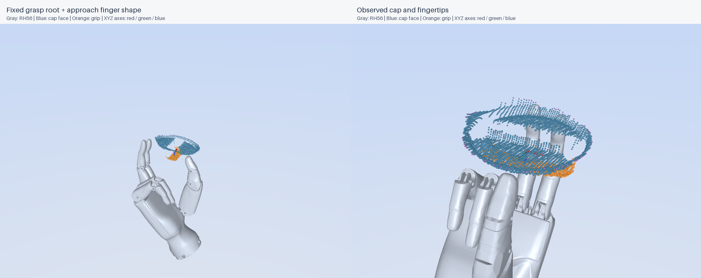
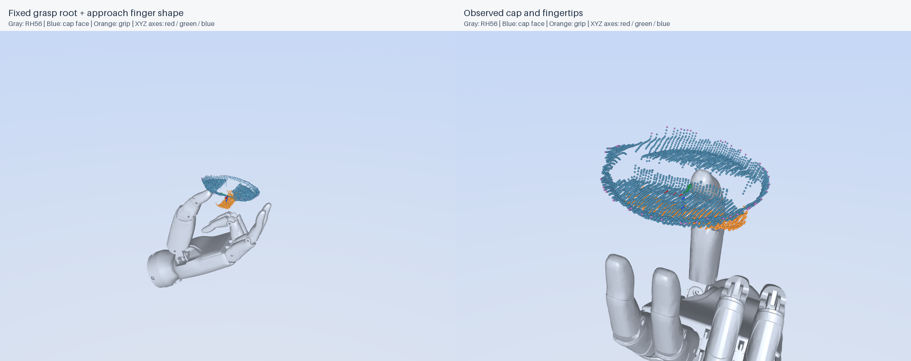

0° 方向候选

手根抓取位置（相机系，mm）：99.567, -30.428, 474.078
手根抓取位置（左臂基座系，mm）：1011.516, 299.547, -324.191
盖体位置与朝向来自当前 5,742 点整盖观测。仅叠加独立 RH56 手模型，不加载虚拟油箱、油箱盖、机械臂或地面。两个候选绕同一盖轴相差 180°，尚未选择执行方向。
这是手根抓取位置，手指显示接近预型；本次没有施加沿盖轴外退的预抓取距离，也没有计算机械臂 IK 或执行运动。参考中心继续使用已记录的 8.5 mm 模型偏移。
两个候选的结构化位姿 · 两方向对比图 · 完整实测场景点云

手根抓取位置（相机系，mm）：99.567, -30.428, 474.078
手根抓取位置（左臂基座系，mm）：1011.516, 299.547, -324.191

手根抓取位置（相机系，mm）：91.967, 121.742, 503.853
手根抓取位置（左臂基座系，mm）：1003.826, 447.781, -369.662
CloudCompare：在同一候选目录中同时打开 cap_cloud.pcd 和 rh56_fixed_grasp.ply，均为相机系毫米坐标，无需手动配准。JSON 中长度单位为米，四元数顺序为 XYZW。几何候选尚未验证真实抓稳或机械臂可达性。